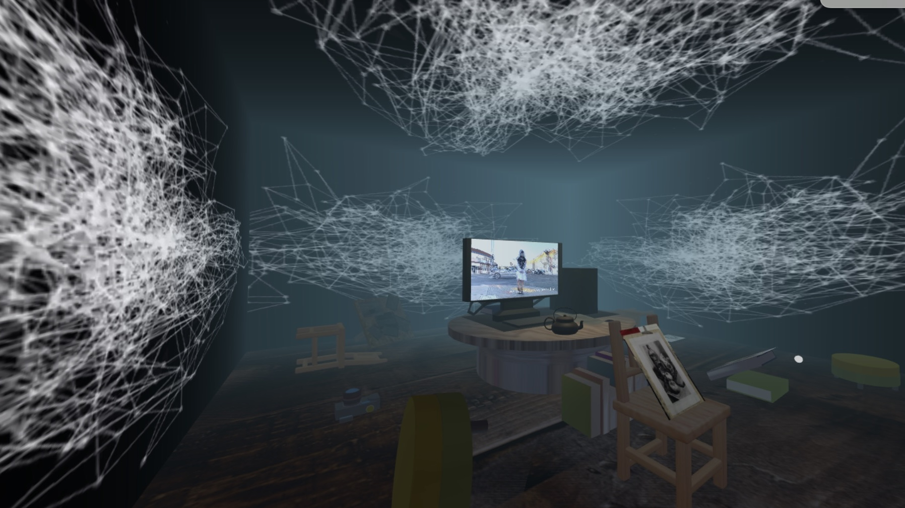
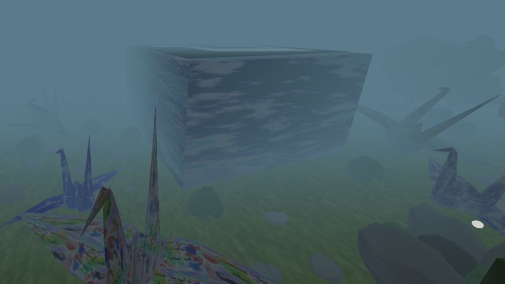
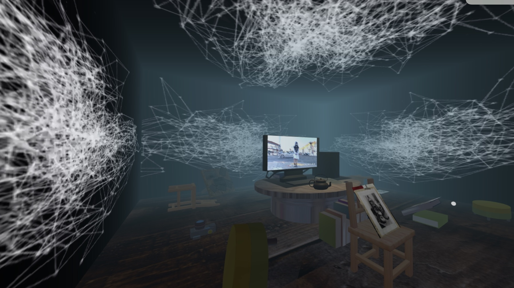
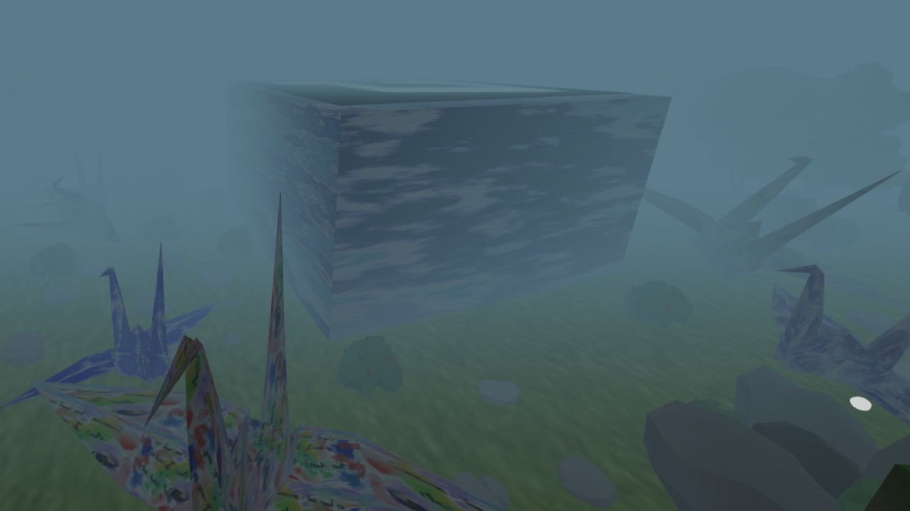

“Yesterday is not today's memory, and tomorrow is just today's dream”. As a child who grew up in an Asian family, as the first child in the family, and as an artist, I was deeply influenced by traditional culture. I have been placed with high expectations since I was a child. After I chose to become an artist, everyone asked about my plan for the future. With more and more doubts, I began to rethink why I chose art as my major. When sitting with someone with clear goals and ambitions, I also began to doubt my original intention of choosing art. I have no goals or certain dreams. I only know that I enjoy the process of learning new things and exploring new skills. It makes me think I'm a fragment in this vibrant environment. I spent 18 years in what others so-called "good for your future" concept, and I started to break free of this cage. After five years of digital media art exploration, facing the bifurcation of life choices, I began to question my choices again. Can I really do it well? Can I survive as an artist? I want to seek answers; I want to know what my dream is; I want to tell, but how can I express it in words? I seek a media to express emotions, and hope that it can help me express my helplessness and response. I found a bridge —— ART. Interaction is the key to my art creation. When you integrate with my art and enter the scene I created, you will feel the emotions from deep inside. I want my art to lead you to the response —— “People with dreams are worthy of respect and envy. When most people are mediocre and busy with reality, stick to it, don't be afraid to be different, what kind of life you should have, it is you yourself to write”. I hope that my art is a kind of motivation, a context that transcends hesitation. It conveys my response to everyone.
Artist Bio
After studying traditional art for 5 years, Mengshi entered the digital media art area and began to explore the integration relationship between physical art, virtual art, data and traditional art. In the process of exploration, she tried to blend painting and projection and discovered a special obsession with glitch art. In the research of physical painting and new media art, Mengshi looked for emotional sustenance and lost her original intention in the process of searching for dreams. Mengshi decided to express her feelings in her art and hope that those who question her can find answers in her art. Mengshi Chen moved from southern China at the age of 18 to the United States, a place completely unfamiliar to her. She is completing her BFA degree in the Digital Media Art at San José State University.
 


